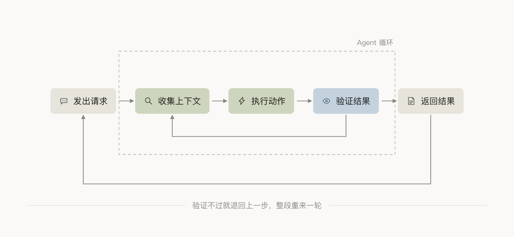
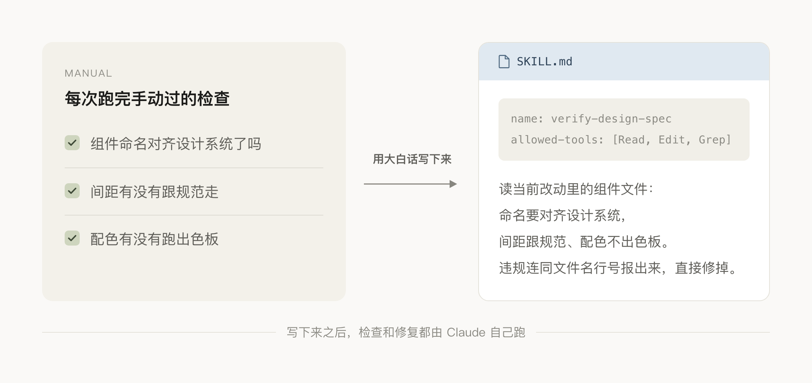
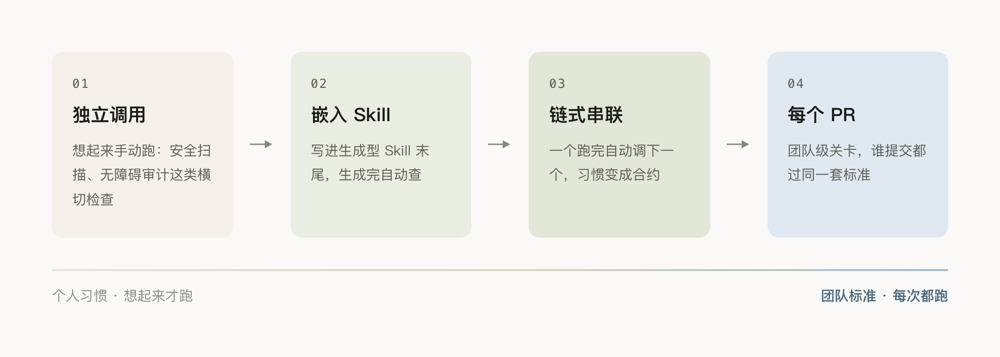
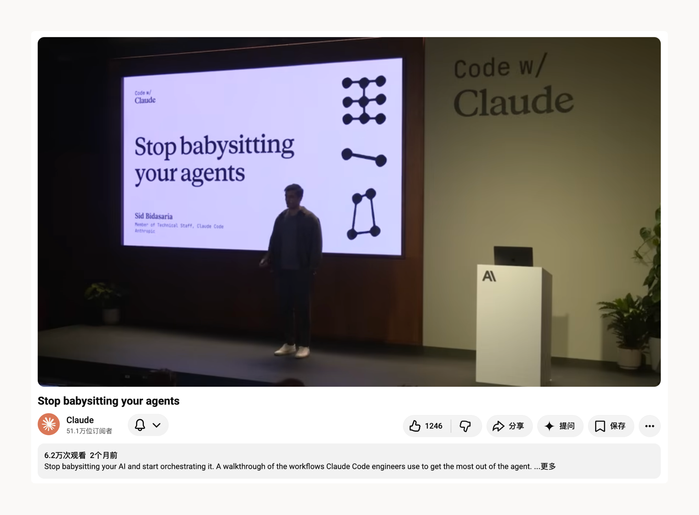

大多数 Agentic Coding Session 都遵循一个循环： Agent 收集上下文，采取行动，验证结果，并在需要时回到循环中收集更多上下文。Agent会自我验证、最终完成工作。但生成的结果不会 100% 满意，总有需要手工调整的地方。就像平时用 Coding Agent 生成设计的这个过程中，基本每次生成后，都要“截图+修改 Prompt”这个手动检验环节，并希望下次直接遵循新加的规则。
Agent 无法推断的内容成为了手动检查功能的步骤，这些手动步骤可以转化为 Skill 让 Claude 自己执行。。 Anthropic 把这个过程称为验证循环**（Verification Loop），检查规则一旦写进去，下一轮生成就不用重复同样的问题。
验证 Skill
把检查习惯写成规则
Agentic Coding 的循环是这样的：发出请求 → 收集上下文 → 执行动作 → 验证结果 → 不对就再来一轮。Claude Code 内置了一批验证能力，从 /verify Skill 到 Toolchain 错误捕获到 PR 级的 Code Review——但这些查的是通用规范。每次手动重复做的、跟项目绑定的检查，它不知道。

Anthropic 给的思路是：把每次实现新功能之后重复执行的手动检查记下来，用自然语言写出来。 不光是定性的判断能写，确定性的规则一样可以。
Anthropic 给的例子是查日志规范的，我没用处，学着换成设计场景，一条最小的验证 Skill 大概这样：

就用自然语言写下来，Claude 读到就知道该查什么、怎么查、查到问题怎么处理。
加入工作流的四种方法
验证 Skill 写好了，怎么挂到工作流里？Anthropic 给了四种方式，从轻到重。

•独立调用，想起来手动跑一下。适合无障碍审计、响应式断点检查这类不是每次都需要启动的流程，比如：文字对比度够不够 4.5:1、点击热区有没有到 44px、窄屏下布局有没有问题，一个页面做完再过一遍就行，不必每改一个组件都跑。缺点是得自己记着调；如果发现每次都要手动跑一遍，说明该往下挪了。
•嵌入式，在生成型 Skill 末尾加一句话调用的话。比如出组件的 Skill 末尾加一行「生成组件后，检查间距是不是 4 的倍数、颜色有没有取自色板 Token，不符合先改完再报告完成」——验证就自动成了生成流程的一部分。限制是只能改自己维护的 Skill，内置的改不了。
•链式，一个 Skill 跑完自动调下一个。Anthropic 提到他们内部 Claude Code 团队日常就在用这个模式：先跑 /code-review 找 Bug，再跑 /simplify 清理 Diff，然后 /verify 确认功能，最后走自定义的 /design Skill 检查 UI 规范。换成设计这边工作流，一整条链路就是：出页面 → 查组件是不是用的设计系统里规定的 → 查无障碍和交互态 → 截图回看排版有没有跑偏，将工作习惯变成规则。但 Token 消耗会明显增加，Anthroipc 建议广泛部署前先测几轮。
•加在每个 PR 上，链式验证稳定之后推到团队级。设计系统的组件代码合进 main 前，自动过一遍设计标准，比如有没有硬编码色值绕开了 Token、新组件是不是重复造了个已有的、图标尺寸和描边有没有对上规范，不管谁提交都走同样的关卡。不过 PR 级这个方式风险和成本很大，每次调整都是团队可见事件。
Skill 越写越多
维护也是成本
加入 Skill 的检查行为越多，Claude 首次生成的结果越接近标准，因为它知道最后要过哪些关，执行时就会主动对齐。
但 Skill 不是写完就完事。链式验证跑一轮，Token 消耗比单个 Skill 高出不少；Skill 本身也需要迭代，第一版写出来大概率要在新任务上试几轮、发现遗漏、再改。Anthropic给了个具体的起步建议：挑出重复次数最多的检查步骤，先试内置的 /verify Skill，不够用再写一条自定义的/verify-design-spec Skill，在新任务上跑一遍确认效果。
高频且固定的手动检查，写成验证 Skill 省掉的时间，值得放进日常。但标准还在变的检查、或者偶尔才做一次的审查，维护成本可能比手动跑还高，可以先不动。

Claude Code 团队也讲了做这套验证循环的出发点：那些不再需要你亲手修的部分，把你的注意力释放出来，留给了只有你能做的、没有任何 Skill 能替代的工作。
本文内容参考 Anthropic 官方博客 Building verification loops in Claude Code with skills。